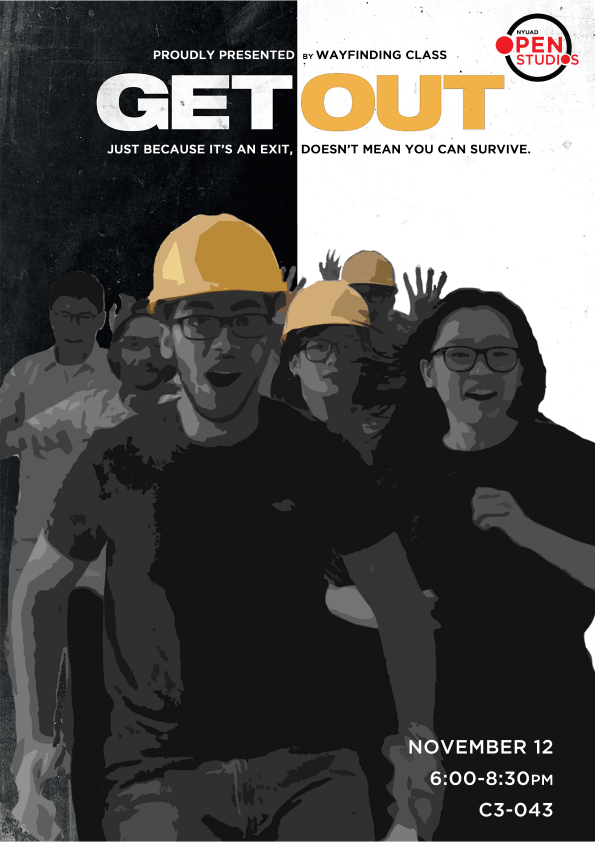

In NYU campus in Abu Dhabi, accessing a building via a five minutes walk can be a very pleasant experience during winter; and a really challenging one in the hot summer months. (As we have seen, this is why users have naturally found ‘desire paths’ among buildings: from back alleys to back alleys and so on. One more time, a desire path is the most practical route between an origin and destination.)
In the Spring 2015 the Wayfinding Class conducted a survey among the users of our Arts Center and found that one of the main requests was to facilitate the access between the Arts Center and the adjacent Campus Center: the service door in the photo does just that, providing a direct path between the two buildings, minimizing the outdoor path.
That understandable desire seemed to contradict some preconceived ideas on where the desired paths on campus should be; instead of following the users requests some planners resorted to Surrealism, as the ultimate weapon against logic and user centered design. Behold the sign on the open door: “This is not an entrance. This door does not open.” But in reality that is a perfectly valid entrance – actually the users’ favourite one – and, yes the door does open.

The questionable aspect of these signs did not escape the attention of our students either. For their end of term show they advertised their class work through a series of Hollywood blockbusters movie poster parodies that made all campus curious on the usually neglected topics of wayfinding and signage.
.jpg)

.jpg)
.jpg)
.jpg)